Technical University of Munich | Advisors: Lars Linden & Celine Stauch (LMU Munich)
This project studies the binary classification of VBF Higgs-pair production events in the semileptonic channel HH → bbqqℓν, with the goal of determining whether a matched, truth-level event representation contains enough information to distinguish the Standard Model coupling point at κ2V = 1 from all other coupling values.
The Standard Model sample is strongly depleted after jet matching (only 0.4% survive selection), making C1 versus Cnot 1 a genuinely difficult classification task in both data-statistics and physical terms.
We benchmark 13 ML models across a comprehensive preprocessing ablation — six scaling strategies, three normalization strategies, and three sampling strategies — and include a DeepSets model that classifies sets of events simultaneously. The best single-event model (MLP) reaches 78.6% accuracy. DeepSets with ten events per set reaches 99.1%, showing the coupling signal becomes far clearer with multiple events.
VBF Higgs-pair production is a rare process predicted by the Standard Model whose rate is
highly sensitive to the quartic coupling constant κ2V
(the cvv parameter). Since VBF HH production has not yet been observed, measuring
or constraining κ2V requires ML-assisted discrimination of events produced at the
SM point (cvv = 1) from events produced at anomalous coupling values.
We study the semileptonic decay channel HH → bb WW* → bb qq ℓν, producing two b-jets, two light jets, a charged lepton, and a neutrino. Events are processed through a full Delphes detector simulation and jet matching pipeline. The coupling scan covers cvv ∈ {0.0, 0.5, 1.0, 1.5, 2.0, 3.0}.
| κ2V value | Class label | Matched events | Survival fraction |
|---|---|---|---|
| 0.0 | C0.0 | ~98 000 | ~13% |
| 0.5 | C0.5 | ~79 000 | ~17% |
| 1.0 (SM) | C1 | ~3 400 | ~0.4% |
| 1.5 | C1.5 | ~82 000 | ~10% |
| 2.0 | C2.0 | ~140 000 | ~18% |
| 3.0 | C3.0 | ~120 000 | ~21% |
Because all non-SM classes are nearly indistinguishable from each other (5-class accuracy ≈ 20%, equal to random guessing), the task is reduced to the binary problem: C1 vs. Cnot 1.
Each event is described by kinematic four-vector observables of the reconstructed physics objects, grouped by their role in the topology. In total 52 features are used (after dropping azimuthal angles and some jet-level duplicates that provide no discriminating power). The dataset (~1M events, CSV) is publicly available for download. ↓ Download dataset
Kinematics of the two forward tagging jets (pT, η, m, E, ΔR, jet-level).
System momentum and individual quark daughters from the W → qq decay.
Charged lepton and neutrino four-vector components.
Jet-level and b-jet daughter kinematics of the Higgs decaying to b-quarks.
Derived quantities built from multiple objects: HH mass, ΔR distances, invariant masses.
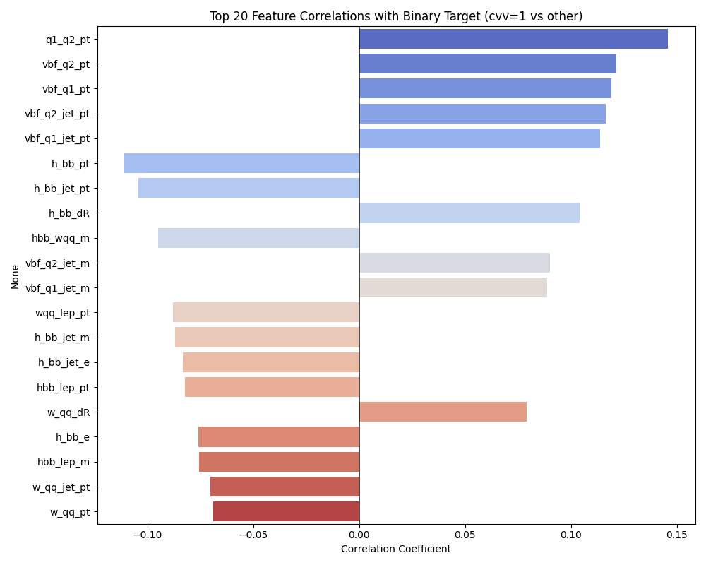
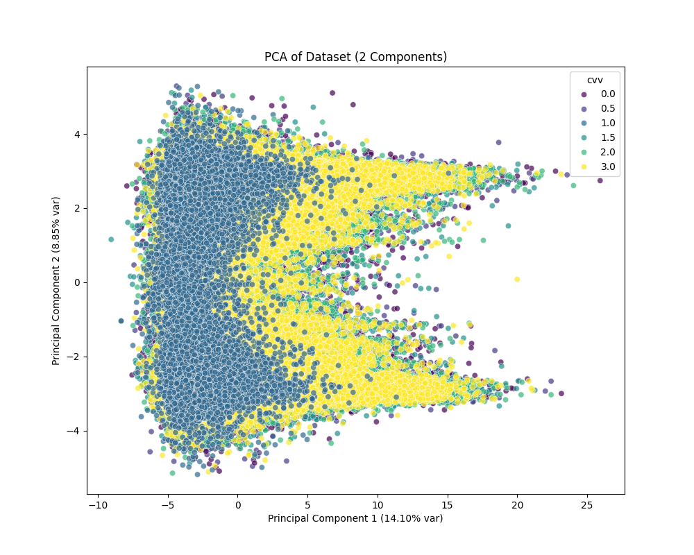
The per-class distributions (C1 in red, Cnot1 in green) reveal where the coupling signal concentrates. Most kinematic variables show substantial class overlap, which reflects the fundamental difficulty of the task — the coupling parameter κ2V affects production rates and kinematics only at the level of small shape distortions.
The clearest separation is found in pseudorapidity (η) variables, particularly for the VBF tagging jets. The Standard Model coupling point (cvv = 1) produces events where the VBF quarks tend to populate a broader and more central η range compared to anomalous coupling values, which drive more extreme forward topologies. This is consistent with the physics: at the SM point, the quartic coupling partially cancels the amplitude growth from the longitudinal WW contribution, softening the VBF kinematics. Energy-related variables (E, pT) show little to no class separation, and azimuthal angles (φ) are nearly uniform for both classes due to the rotational symmetry of the detector geometry.
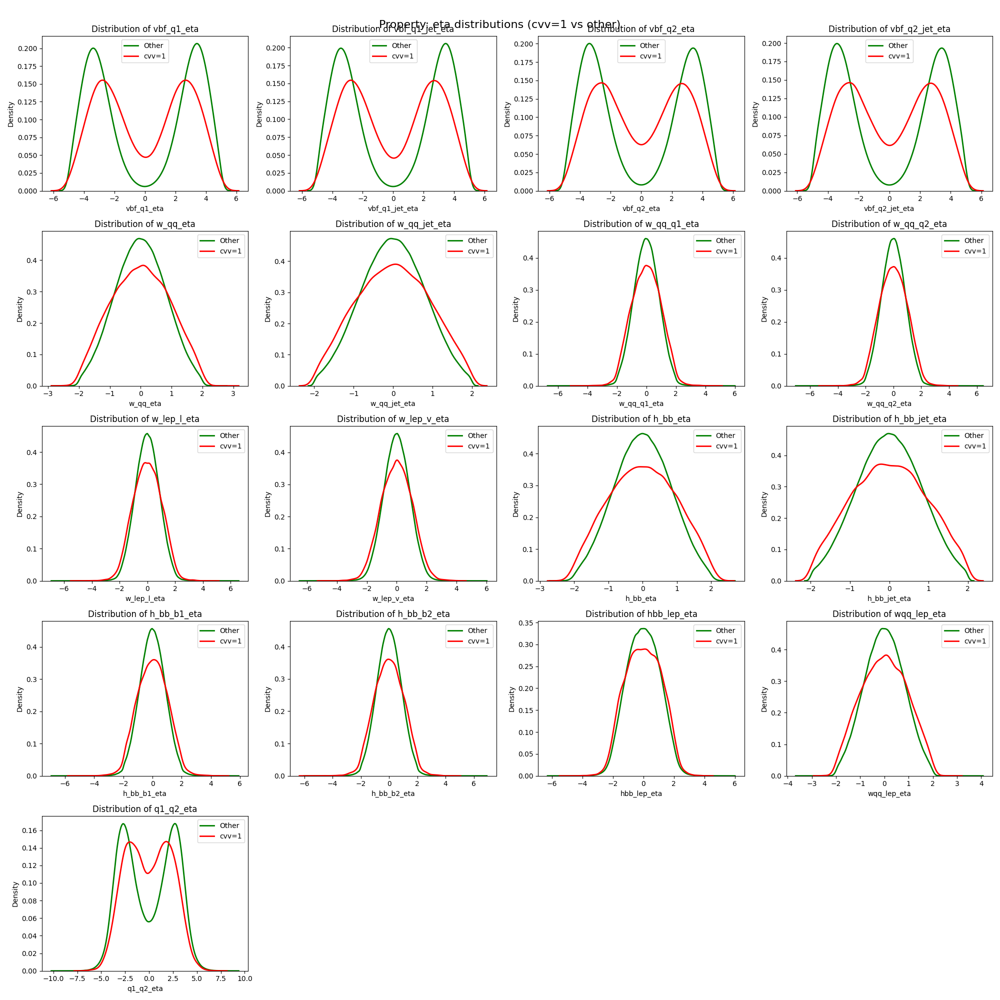
All classical ML models are implemented with scikit-learn and run through the same config-driven framework. The PyTorch MLP uses residual connections, batch normalisation, and optional SE blocks. DeepSets operates on sets of events.
After sweeping all preprocessing combinations we identify the single best configuration per model. Toggle between the chart and a summary table below.
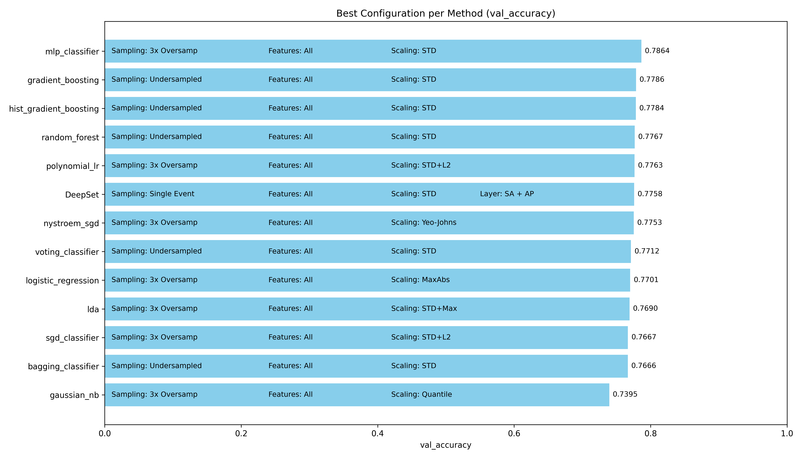
Feature scaling transforms each column to a common numerical range before training. We compare six strategies: Standard (STD), MinMax, MaxAbs, Robust, Yeo-Johnson, Quantile (normal), and Quantile (uniform). For neural networks and distance-based methods, scaling is critical because gradient updates are dominated by large-magnitude features otherwise. Tree-based models are theoretically invariant but can still be affected in practice through interaction with regularization.
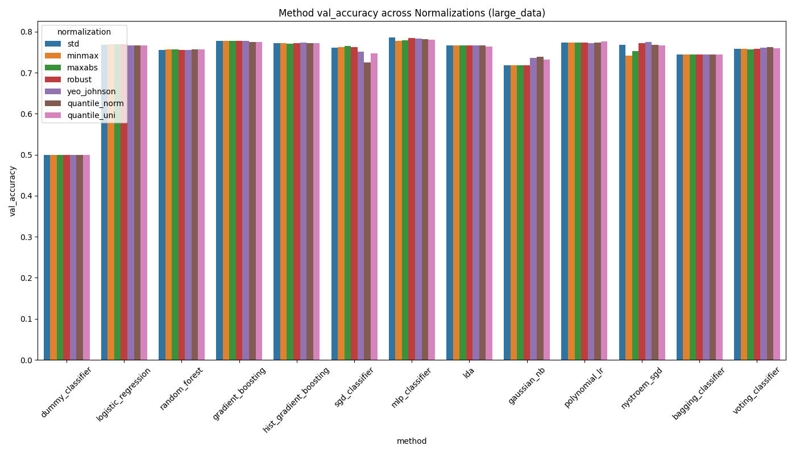
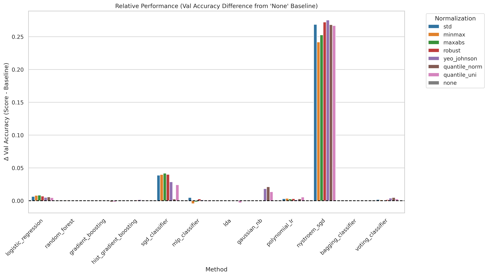
Per-sample (row-wise) normalization scales each individual event vector to unit norm after column-wise scaling. We test three variants: no normalization, L1 norm, L2 norm, and Max norm. The idea is to remove scale differences between events, which can help when the overall magnitude of a feature vector carries no class-discriminating information.
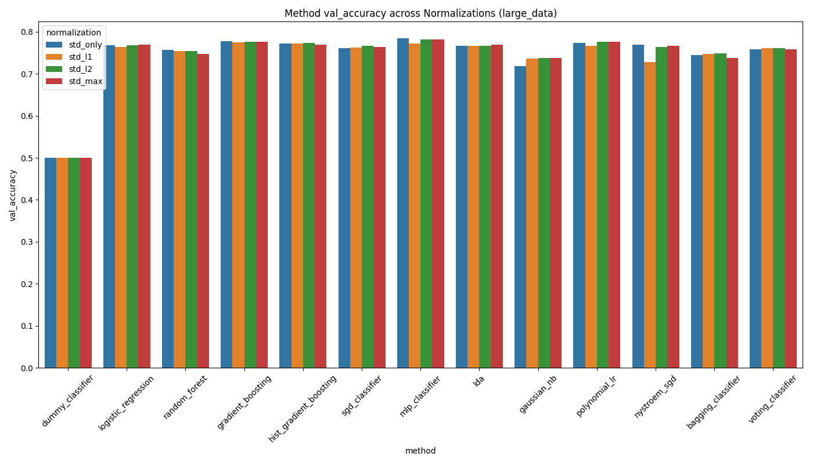
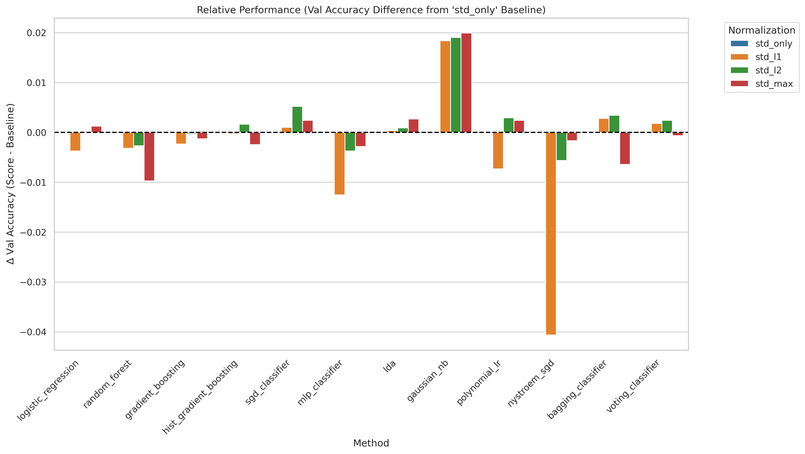
We compare three feature sets: all features (52 variables including combination observables), old features (basic kinematic four-vectors only, no derived quantities), and new features (the combination observables alone). The combination features are derived quantities involving multiple reconstructed objects — such as the HH invariant mass, ΔR distances between systems, and multi-object invariant masses — motivated by their expected sensitivity to the coupling structure.
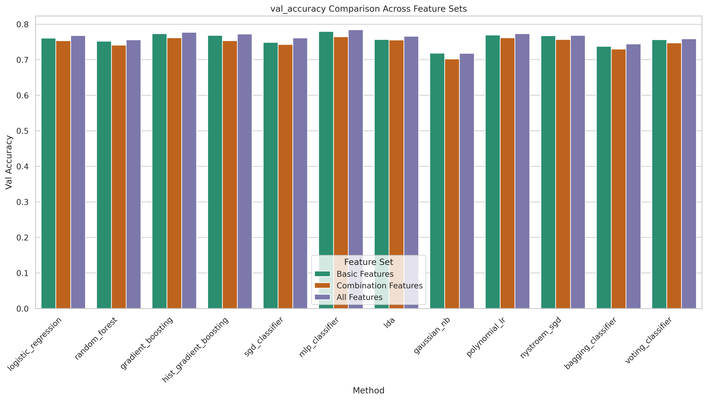
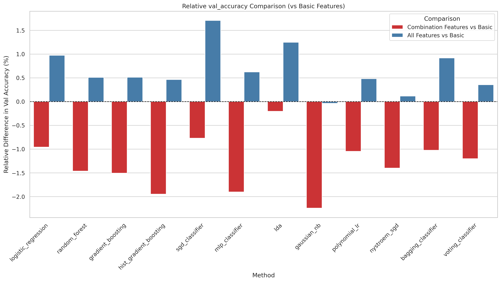
The Standard Model class (cvv = 1) has only 0.4% matching survival, leading to a severe class imbalance. We compare three strategies: baseline (no resampling), 3× oversampling (SMOTE-style duplication of the minority class to 3× its original size), 10× oversampling, and undersampling (reducing the majority class to match the minority).
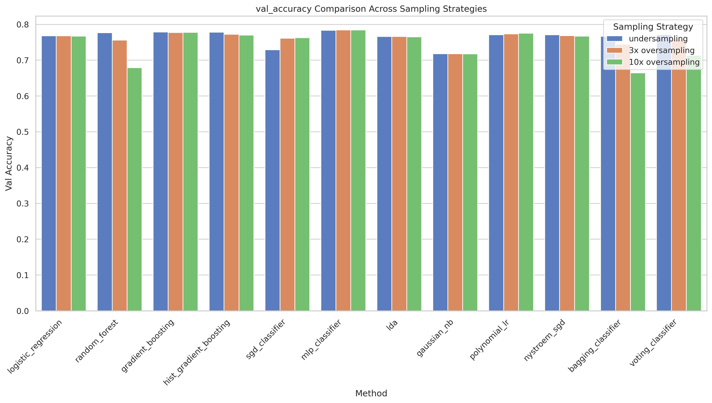
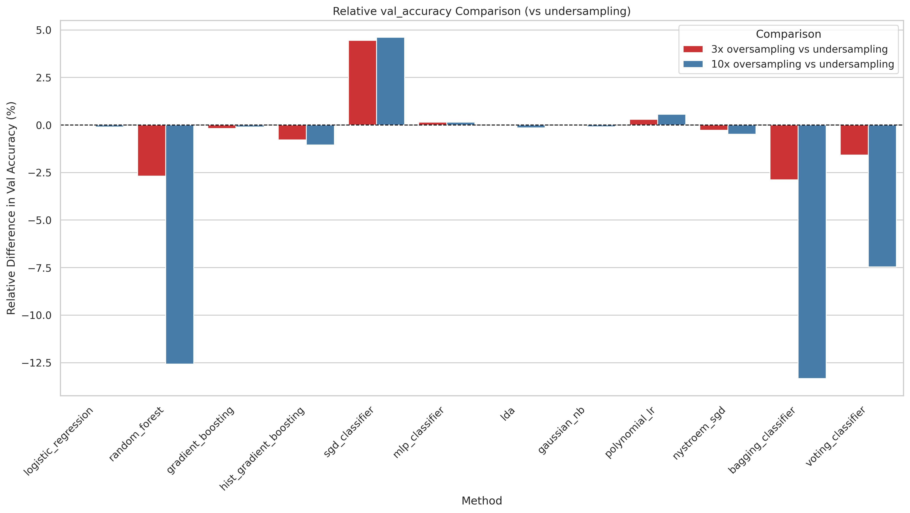
Ensemble methods combine predictions from multiple individually trained models via majority voting. The idea is that if models make different errors, a vote can cancel individual mistakes and improve overall accuracy. We test diverse combinations of the best-performing models (MLP, GBT, HistGBT, Random Forest, Logistic Regression) and measure both accuracy and macro F1 of the ensemble versus the individual member models.
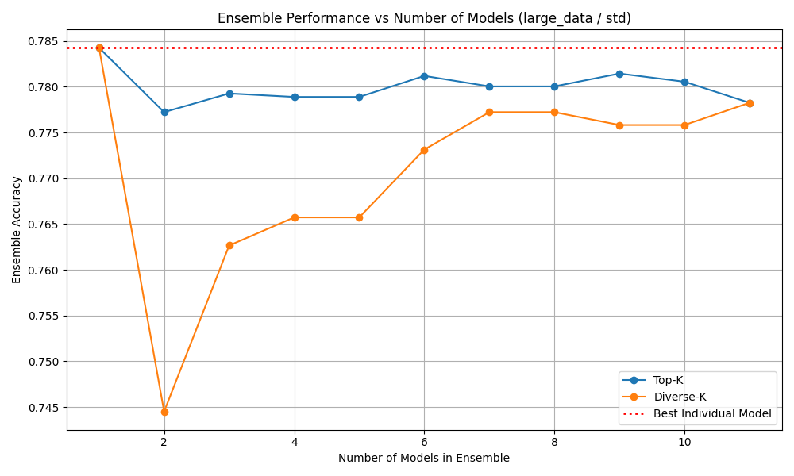
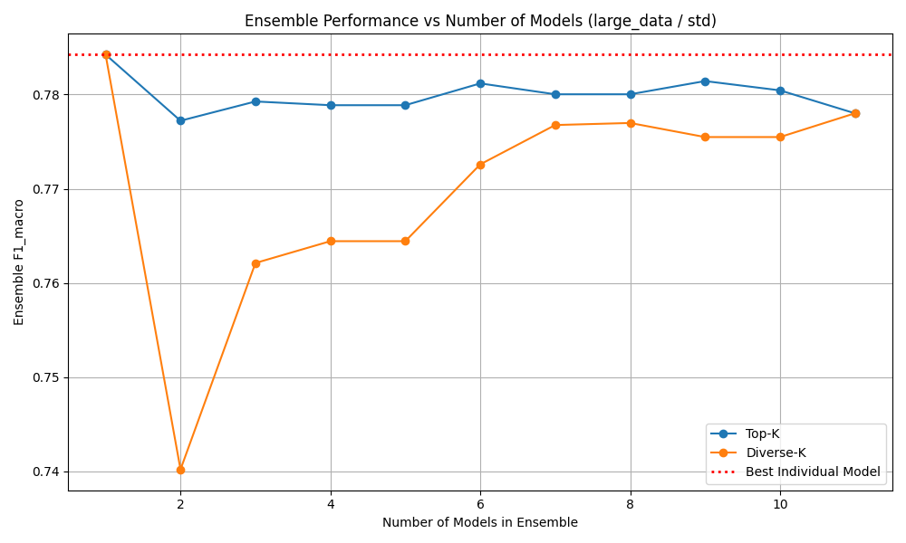
DeepSets is a permutation-invariant architecture that classifies a set of N events simultaneously rather than one at a time. Each event is encoded independently through a shared MLP, then the encoded representations are aggregated (via max pooling, attention pooling, or self-attention) before a final classification head. Because all N events share the same underlying coupling parameter, using multiple events per prediction provides a statistical averaging effect that makes the coupling signal much clearer.
| Set size N | Accuracy | Precision | Recall |
|---|---|---|---|
| 1 | 77.58% | 77.57% | 77.56% |
| 2 | 86.09% | 85.22% | 85.21% |
| 3 | 90.27% | 90.48% | 90.47% |
| 5 | 95.51% | 95.28% | 95.28% |
| 10 | 99.11% | 98.82% | 98.82% |
This study demonstrates that binary discrimination of VBF HH events at the Standard Model coupling point from all other coupling values is achievable with classical ML, but is genuinely difficult due to extreme class imbalance and limited signal in single-event representations.
Standard scaling and 3× minority oversampling form a robust preprocessing baseline. Adding combination features (derived multi-object quantities) gives small but consistent improvements. No ensemble combination outperforms the best individual model, confirming that all methods exploit the same feature correlations.
The most striking result is from DeepSets: classifying sets of 10 events simultaneously reaches 99.1% accuracy, compared to 77.6% for a single event. This suggests that while the coupling signal in a single event is weak, it becomes highly statistically significant when integrated over multiple events — exactly the situation in a real experimental analysis.
All results are based on truth-level simulation without detector effects. No held-out test set was used; all reported numbers come from the validation split. Future work could apply the framework to detector-level data, use larger datasets, or investigate whether the strong DeepSets results hold under more realistic experimental conditions.
@techreport{foerster2025vbf,
author = {F{\"o}rster, Felix and Schneider, Lars and Mesner, Johannes},
title = {A Machine-Learning Benchmark for Semileptonic VBF Higgs-Pair
Events in a Coupling Scan},
institution = {Technical University of Munich / LMU Munich},
year = {2025},
url = {https://spatenfe.github.io/vbf_event_classifier/}
}